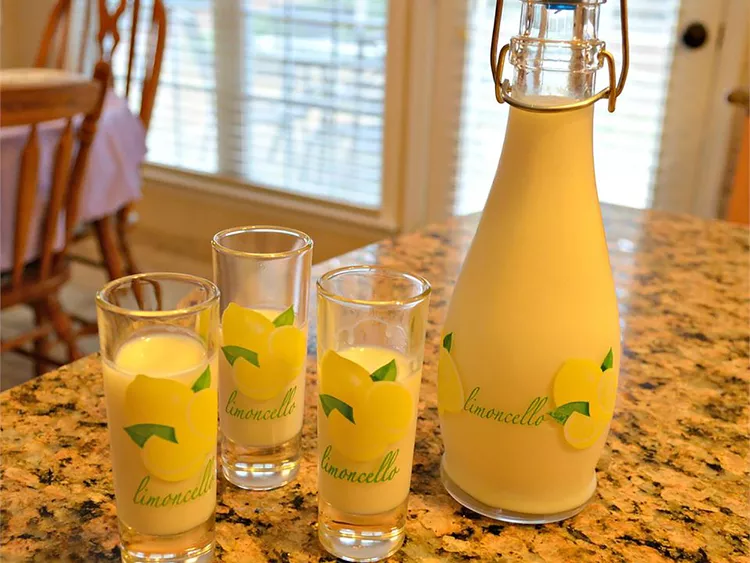

Crema di Limoncello (Cream of Limoncello)

Description
What is crema di limoncello? Cream of limoncello is the perfect answer to the question “what do you do when life gives you lemons?” You make limoncello! And this creamy, lemony version is the perfect end to a delicious meal. I’ve always brought some back from our trips to Italy, but now I make my own at home.
Ingredients
- 12 lemons, zested
- 1 (750 mL) bottle Everclear 190 proof
- 1 1/2 quarts whole milk
- 7 1/2 cups white sugar
- 1 (3g) packet powdered pure vanilla extract, such as Paneangeli® Vanillina, or 1 teaspoon vanilla extract
- 3 (750 mL) decorative bottles with tight-fitting lids, or more if bottles are smaller
Steps
- Wash and scrub the lemons to remove any wax or residue. Remove the peel of the lemons with a vegetable peeler or very sharp knife, being careful to only remove the yellow part, and none of the white pith.
- Place the lemon zest in a large glass jar with a tight-fitting lid. Pour Everclear over lemon zest, replace and tighten the lid. Let sit at room temperature in a dark place for at least 2 weeks.
- Pour milk and sugar in a large heavy-bottomed pan over medium heat, and heat until sugar is fully dissolved and mixture is hot but not boiling, stirring occasionally. Stir in powdered vanilla extract or liquid vanilla extract. Remove from heat and cool completely.
- Using a fine sieve or cheesecloth, strain lemon mixture into milk mixture, removing all of the lemon zest; mix well. Pour into a container that has a pour spout, decant into decorative bottles, and store in the freezer.